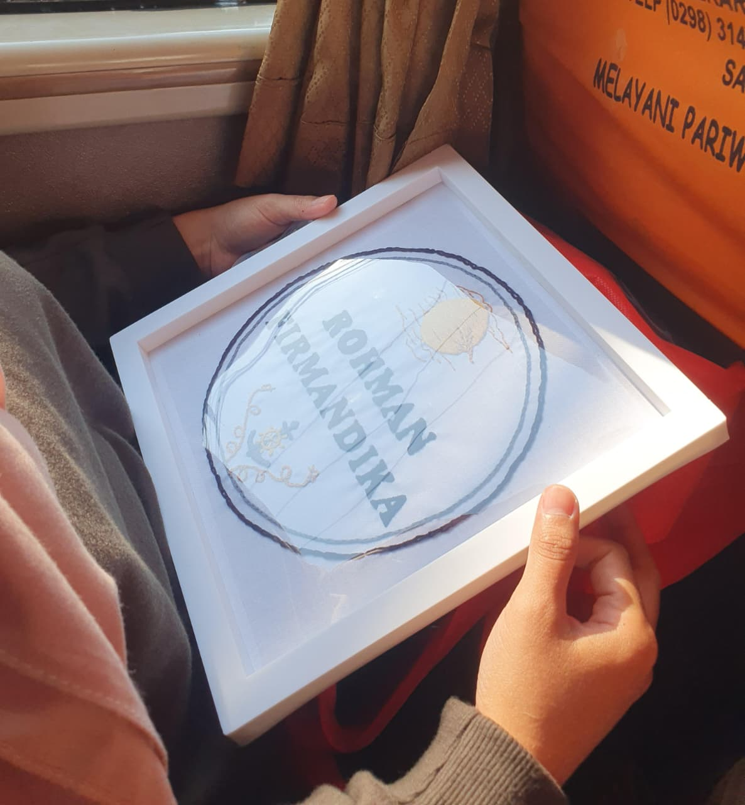
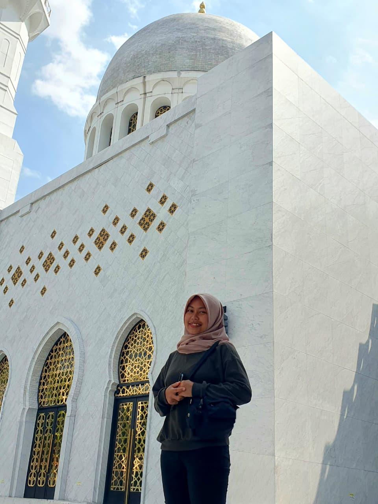
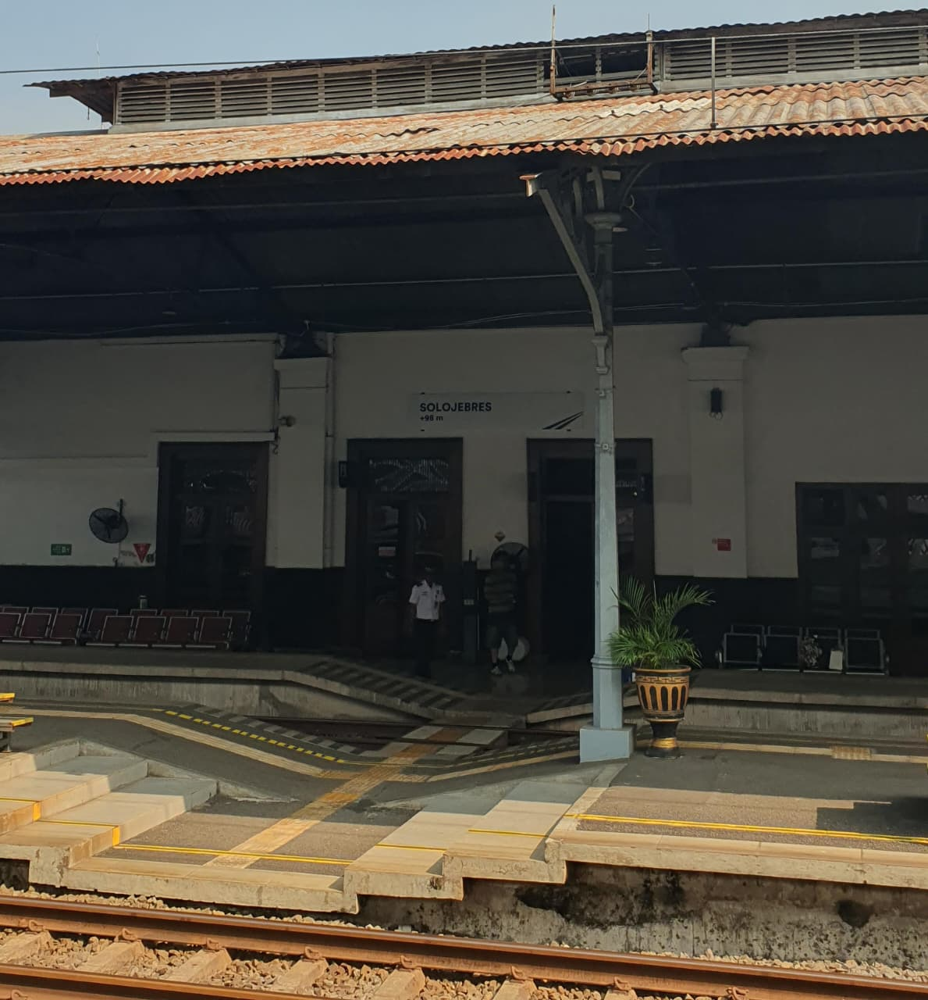
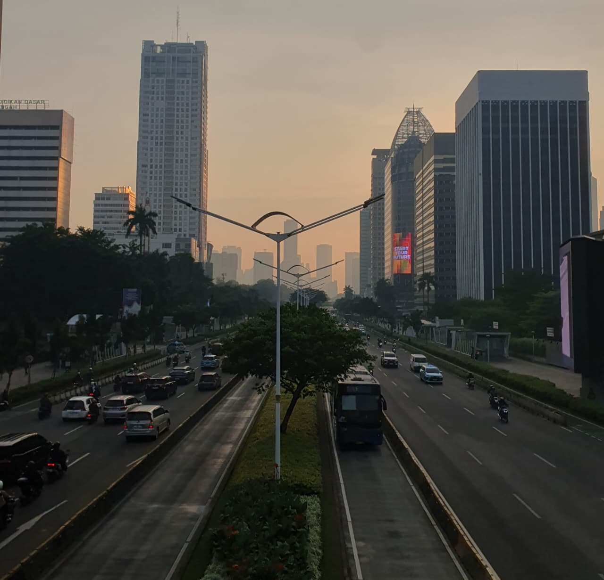

Mudik kali ini terasa jauh lebih istimewa. Alasannya sederhana, namun cukup membuatku terus tersenyum: ada Margi yang menemani perjalananku.
Semuanya bermula pada tanggal 4 Juli. Hari itu, aku menyempatkan diri mampir ke tempat Mas untuk mengambil buku sekaligus berpamitan. Tanggal 10 hingga 12 Juli nanti, aku berencana pulang kampung. Mengingat waktu yang serba mepet, segala persiapan telah kumatangkan jauh-jauh hari—mulai dari memetakan rute, menyusun anggaran, barang bawaan, hingga memastikan fisikku siap untuk perjalanan ini.
Jumat, 10 Juli 2026
Pagi itu terasa menjanjikan. Tas ranselku sudah terisi rapi dengan pakaian yang kucuci beberapa hari sebelumnya. Selesai berkemas dan mandi, aku berangkat kerja dengan satu doa yang terus kurapalkan dalam hati: "Semoga hari ini pekerjaanku selesai tepat waktu, agar aku tak perlu berlarian mengejar kereta."
Dan benar saja, waktu seolah berlari. Tahu-tahu senja sudah menyapa. Begitu urusan kantor beres, aku segera berganti pakaian, menyandang ransel, dan bergegas menuju tempat motorku terparkir. Aku memang sengaja memarkirnya di dalam gedung agar lebih hemat waktu. Meski harus sedikit merogoh kocek lebih dalam.
Langit malam mulai menyelimuti ibu kota saat aku memindahkan parkir motorku ke area parkir yang lebih aman jika aku meninggalkan motorku dalam beberapa hari kedepan. Sekitar pukul setengah delapan malam. Dari sana, langkahku berlanjut menuju halte. Bus Transjakarta membawaku membelah keramaian menuju Monas, sebelum akhirnya aku transit dan melanjutkan perjalanan menuju Stasiun Pasar Senen.
Di Senen, aku masih punya waktu luang sekitar dua jam. Teringat pesan Ibu yang selalu mewanti-wanti agar perut tak kosong sebelum bepergian, aku menyusuri lorong-lorong stasiun hingga menemukan kedai ayam goreng. Di tengah suapan makan malamku, aku menghubungi Margi. Ada pemandangan kecil yang menghangatkan hati malam itu; seorang anak kecil duduk anteng di sebelahku, seolah menemukan kenyamanan di dekat orang asing ini.
Pukul sebelas malam, antrean panjang menyambutku di pintu masuk peron. Begitu berhasil masuk dan menemukan kursi di dalam gerbong, rasa lelah langsung mengambil alih. Aku terlelap begitu saja, bahkan tak sadar kapan penumpang di sebelahku datang dan duduk. Barulah saat suara peringatan keberangkatan menggema dan kereta mulai berderak maju, mataku sempat terbuka sesaat.
Sepanjang malam, tidurku tak sepenuhnya pulas. Sesekali aku terbangun setiap kali pengumuman stasiun pemberhentian terdengar. Di saat-saat seperti itu, iseng kucek detak jantungku. "Ah, syukurlah, masih rendah," batinku tersenyum kecil, lalu kembali memejamkan mata.
Menjelang subuh, aku terbangun. Pria di sebelahku masih tertidur pulas. Tak tega rasanya membangunkan dia, jadi aku hanya bisa berpasrah dalam hati, berharap kereta segera tiba di tujuan sebelum fajar menyingsing agar aku tak terlewat waktu Subuh.
Sabtu, 11 Juli 2026
Kereta akhirnya merayap memasuki Stasiun Tawang saat jam menunjukkan pukul setengah enam pagi. Antrean toilet ternyata mengular panjang. Sedikit menahan rasa ingin buang air, aku memutuskan untuk berwudu terlebih dahulu dan menunaikan kewajiban Subuhku.
Niat hati ingin membeli Roti'O sebagai pengganjal perut, tapi sayang, aku sudah telanjur keluar dari gerbang stasiun dan sang petugas keamanan tak mengizinkanku masuk kembali. Aku sempat mencoba memesan lewat pintu belakang, tapi petugas di sana menolak dengan halus. "Mau pergantian shift, Kak. Kalau berkenan, nunggu sampai jam setengah tujuh, ya." Aku mengangguk pasrah dan membatalkan niatku.
Langkahku kemudian membawaku menyusuri jalanan Kota Lama Semarang yang lengang di pagi hari. Mengandalkan ulasan di internet, mataku tertuju pada sebuah kafe dengan rating memuaskan: Arah Coffee. Aku masuk dan memesan croissant cokelat dan keju, menyempatkan diri ke toilet selagi menunggu pesanan disiapkan.
Dengan perut yang lumayan terisi, aku berjalan menuju halte BRT. Di dekat sana, aku menghampiri
seorang pedagang makanan. "Halte Jurnatan masih biasa dipakai orang naik-turun bus nggak,
Kak?"
"Sepertinya masih," jawabnya.
Aku hanya membatin geli mendengar jawaban 'sepertinya'
itu. Setelah menunggu dan melihat tiga bus berlalu tanpa henti, lambaian tanganku akhirnya berhasil
membuat satu bus menepi. Perjalanan menuju Ungaran pun dimulai.
Pukul 07.40, aku turun di halte Ungaran. Saat aku tengah membuka tas, pandanganku tanpa sengaja tertuju ke seberang jalan. Ada Margi di sana. Rasa bahagia seketika membuncah. Aku menyeberang, menyapanya, dan kami berjabat tangan. Setelah menyempatkan diri menggosok gigi di toilet dan mengunyah permen karet, kami melangkah bersama menuju Soto Ayam Cipto Roso.
Meski antreannya cukup ramai, semuanya sepadan. Porsinya memang mungil—mangkuknya saja kecil—tapi cukup membuatku kalap menghabiskan tiga tusuk sate dan satu gorengan. Selesai sarapan, kami kembali berjalan sejauh setengah kilometer untuk mencari bus menuju Solo.
"Sepertinya kalau di daerah sini banyak CCTV, deh. Petugas dapur tu orang-orang sini" celetuk Margi tiba-tiba. Kami tertawa ringan, menikmati percakapan santai di sepanjang jalan. Tak lama setelah aku mengeluh belum melihat bus yang lewat, sebuah Bus Safari Po muncul dari kejauhan. Kami pun naik dan duduk berdampingan.
Sepanjang perjalanan di dalam bus, obrolan kami tak henti mengalir. Di momen itulah Margi memberikan sebuah karya yang ia buat sendiri: sulaman namaku. Di atas namaku tertera gambar bulan, dan di bawahnya terdapat sebuah jangkar.

"Ini keren banget, Margi. Aku suka," pujiku tulus.
Margi tersenyum lembut. "Ketemu kamu kan nggak
bisa tiap hari. Aku udah bilang sama diriku sendiri, aku mau bikin ini karena aku senang.
Ngerjainnya nggak mau tertekan, sebisanya, seselesainya. Alhamdulillah selesai pelan-pelan, sabar,
dan nggak ngeluh."
"Sweet sekali," balasku, merasakan kehangatan yang perlahan menjalar di dada.
Kami tiba di Terminal Tirtonadi pukul setengah dua belas siang. Setelah Margi dari toilet dan aku
membeli air mineral, kami memutuskan mencari makan siang via Ojek Online menuju Gudeg Ayu Solo. Di
tengah perjalanan, pandangan kami tersita oleh kemegahan Masjid Raya Sheikh Zayed.
"Kalau habis
makan kita mampir ke masjid itu, gimana?" tawar Margi.
"Wah, boleh banget," jawabku antusias.
Sepiring Nasi Gudeg Ayam Telur Tahu menjadi santap siangku, sementara Margi memilih versi tanpa telur. Sambil makan, kami juga menikmati es krim yang kami pilih setibanya di tempat Gudeg. Rasa gudegnya lezat, meski menurutku bumbunya sedikit terlalu pekat di lidah.
Selesai makan, kami kembali menuju masjid yang memikat hati kami tadi. Setibanya di sana pukul satu siang, kami terpesona. Bagian dalamnya sungguh mengagumkan. Setelah menunaikan salat dan berpisah sejenak, kami kembali bertemu. Kulihat Margi sedang asyik merekam video. Tanpa aba-aba, aku memotretnya. Ia tersenyum manis, sebuah lengkungan senyum yang kini tersimpan aman di galeriku.

Aku menghampirinya. "Margi, kamu cantik banget. Sini, aku fotoin lagi," pintaku. Ia mengangguk tersipu. "Kamu cantik banget, Margii" Kami pun menyempatkan diri berfoto bersama di pelataran masjid sebelum akhirnya kembali ke Terminal Tirtonadi.
Di terminal, kami celingukan mencari bus Aneka Jaya. Hampir satu jam kami menunggu dalam
ketidakpastian. Tiba-tiba terdengar teriakan sang agen, "Pacitan! Baturetno! Pacitan!"
Aku
mencari-cari sumber suara. Busnya di mana? Sempat kukira bus Eka yang akan berangkat. Ternyata bus
Aneka Jaya terhalang dari pandangan kami. Aku nekat menghampiri pria yang berteriak tadi, dan tepat
saat itu, mataku menangkap badan bus yang sudah mulai bergerak.
Dengan sigap aku melambaikan tangan, berlari kecil agar sang sopir menahan remnya. Margi menyusul di belakangku. Aku mempersilakannya naik lebih dulu, lalu kami memilih bangku deretan kiri. Duduk berdampingan lagi, perjalanan menuju Pacitan terasa begitu singkat karena diisi dengan tawa dan obrolan panjang. Sebelum bus sampai di Donorojo, aku sempat meminta Margi untuk membeli bunga agar bisa ia rawat di Semarang nanti.
Pukul setengah tujuh malam, bus berhenti di Donorojo. Perjalanan kami hari itu harus dijeda. Bapakku sudah menunggu untuk menjemput, begitu pula kerabat Margi.
Hari sudah berganti malam. Pukul 18.40, aku melangkahkan kaki memasuki rumah. Rindu seketika luruh
saat aku menyalami dan memeluk Bapak, Ibu, Simbah, dan Kafa—anak tetangga yang sudah akrab
denganku.
"Kafa nungguin dari siang tadi, katanya kalau sore Om Rohman udah datang mau diajak
main layangan," ujar Ibu. Aku menatap Kafa dengan perasaan bersalah. Langit sudah gelap, jadi kami
harus menunda rencana itu.
Setelah berganti pakaian, suara Ibu dari dapur mengalihkan perhatianku. "Ibu buatkan soto,
lho."
Mataku berbinar. "Wah, makanan kesukaanku!"
Soto hangat buatan Ibu, dinikmati
bersama-sama di dapur yang sederhana, rasanya mengalahkan hidangan apa pun. Selesai makan, aku
mengajak Kafa keluar membeli jajan. Aku membeli martabak, sementara Kafa memilih permen karet karena
ingin diajari cara meniup gelembung.
Malam berlanjut dengan kedatangan dua tamu Bapak. Seperti kebiasaan lama, aku dihujani pertanyaan seputar perjalananku. Aku menjawabnya dengan sopan, merangkai obrolan yang hangat. Pukul delapan malam, rasa lelah akhirnya tak bisa lagi diajak kompromi. Kafa yang ikut terlelap bersamaku di kasur menjadi penutup hari yang panjang itu.
Minggu, 12 Juli 2026
Udara pagi membangunkanku pukul setengah lima subuh. Aku bergegas mandi, meski harus diselingi drama kecil meminta Ibu mengambilkan handuk. Di dapur, Ibu sudah sibuk menggoreng tahu. Aroma gurihnya menggoda. Alih-alih menunggu disajikan, aku, Bapak, dan Simbah justru mencicipi tahu yang baru matang, kami pun menikmati tahu itu bersama-sama. Selesai salat, barulah aku menyantap sarapan sesungguhnya: nasi, sayur tahu, dan lauk tahu. Sederhana, namun terasa sangat nikmat.
Pagi itu, Ibu mengajakku berbelanja ke minimarket. Kami membeli minyak, gula, teh, roti, jajanan untuk Kafa, dan tak lupa mencari parfum incaran Ibu. Aku menyodorkan beberapa tester hingga pilihan Ibu jatuh pada Morris Romance. Di antrean kasir, mataku tak sengaja melihat jepit rambut berbentuk kupu-kupu yang lucu. Aku memfotonya dan mengirimkannya pada Margi.
Sebelum pulang, kami mampir membeli gorengan, yang langsung ludes kami nikmati bersama setibanya di
rumah. Namun, waktu tak bisa dihentikan. Saatnya bersiap kembali ke Jakarta.
"Jangan sampai
telat, mending sampai sana lebih dulu," pesan Ibu.
Tepat pukul 08.45, setelah berpamitan dengan
semua orang, aku melangkah keluar rumah.
Aku menunggu bus di "Pojok". Di sana ada Bu Sri, penjual gorengan yang biasa kubeli jajanannya saat aku masih SD dulu. Sembari menunggu bus yang kata beliau baru akan lewat satu jam lagi, kami tenggelam dalam nostalgia. Bu Sri bercerita tentang masa mudanya di Cikarang, tak jauh dari Mekarsari—tempat yang sangat familier bagiku. Obrolan itu membuat waktu menunggu tak terasa membosankan.
Pukul 09.45, suara klakson bus terdengar. Aku menjabat tangan Bapak untuk terakhir kalinya, lalu naik ke dalam bus. Begitu duduk, refleks pertamaku adalah menelepon Margi. Panggilanku diangkat, bahkan wajah ibunya sempat masuk ke dalam frame kamera. Sayangnya, baru saja aku hendak berpamitan, sinyal ponselku hilang.
Di dalam bus, meski terpaan cahaya matahari dari jendela terasa sedikit panas, hawa dingin dari AC perlahan membuai ke alam mimpi. Aku baru tersadar saat bus memasuki kawasan Solo Balapan. Aku mampir sejenak ke musala Terminal Tirtonadi untuk menunaikan salat Zuhur, sekaligus mengabari Margi.
Pukul satu siang, ojek online menurunkanku di Stasiun Jebres. Mengingat keretaku baru berangkat pukul 14.25, aku menyempatkan diri mencari makan di foodcourt pasar seberang stasiun. Pesanan kwetiauku memakan waktu cukup lama, hingga aku harus memakannya dengan terburu-buru walau masih mengepul panas. Tepat pukul 14.15 aku sudah kembali masuk ke stasiun. Sepuluh menit kemudian, kereta perlahan melaju meninggalkan Solo.

Di dalam gerbong, aku memberi kabar pada Margi. Ia menyuruhku beristirahat, namun entah mengapa tanganku lebih ingin merangkai kata demi kata—mengubah perjalananku menjadi jurnal ini. Walau pada akhirnya, kantuk tetap saja datang.
Tempat dudukku berdekatan dengan gerbong makan dan musala. Selesai menunaikan salat Magrib sekitar pukul 18.15, aku memesan seporsi nasi sei sapi. Tak lupa, ku-update Margi lagi. Niat hati ingin berwudu untuk salat Isya, tapi sayangnya air di toilet sedang kosong. Aku pun memutuskan untuk menundanya hingga tiba di Jakarta.
"Kayaknya aku bakal tidur jam sembilan malam ini," pesanku pada Margi. Dan benar saja, di jam tersebut, mataku terpejam sempurna.
Aku terjaga pukul sebelas malam, menyadari stasiun tujuan sudah dekat. Kereta akhirnya merapat di
Stasiun Pasar Senen pada pukul 23.30. Aku segera mencari musala untuk salat Isya dan menghubungi
Margi.
"Di mana?" tanyanya.
"Lagi di musala." Aku lalu memberitahunya bahwa aku akan menginap
di Bobopod Juanda malam itu.
Selesai berdoa, aku memesan ojek menuju hotel. Setibanya di sana, aku langsung check-in. Sebelum terlelap pada pukul 00.15, aku merenung sejenak. Perjalanan mudik yang singkat ini rasanya begitu berkesan dan selalu berhasil membuatku tersenyum.
Senin, 13 Juli 2026
Adzan subuh berkumandang saat mataku kembali terbuka. Setelah rutinitas pagi—mengabari Margi, mandi, dan bersiap kerja—aku pun check-out.
Di seberang hotel, Stasiun Juanda berdiri berdampingan dengan halte Transjakarta. Jembatan penyeberangannya sudah mulai ramai oleh mobilitas warga ibu kota yang bersiap memulai rutinitas. Aku melangkah naik ke halte, menaiki bus Transjakarta 10H. Laju bus membelah pagi hingga akhirnya menurunkanku di Bundaran Senayan sekitar pukul 06.50.

Akhir pekan telah usai, namun memori manis dari perjalanan ini akan selalu kusimpan dengan rapi.